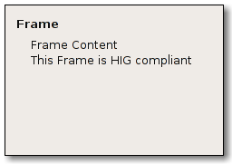

| GIMP Widgets Library Reference Manual | ||||
|---|---|---|---|---|
GimpFrameGimpFrame — A widget providing a HIG-compliant subclass of GtkFrame. |
 |
GObject +----GInitiallyUnowned +----GtkObject +----GtkWidget +----GtkContainer +----GtkBin +----GtkFrame +----GimpFrame
GtkWidget* gimp_frame_new (const gchar *label);
Creates a GimpFrame widget. A GimpFrame is a HIG-compliant variant of GtkFrame. It doesn't render a frame at all but otherwise behaves like a frame. The frame's title is rendered in bold and the frame content is indented four spaces as suggested by the GNOME HIG (see http://developer.gnome.org/projects/gup/hig/).
|
text to set as the frame's title label (or NULL for no title)
|
Returns : |
a new GimpFrame widget |
Since GIMP 2.2